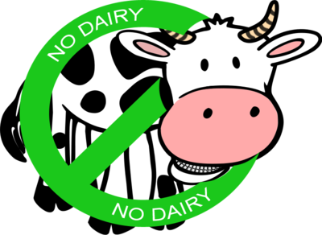

Sources
Images
Click on images for source website
|  |

|
[Loving It Vegan]. (2016, March 19). How To Make A Flax Egg - Loving It Vegan [Video File]. Retrieved from https://www.youtube.com/watch?v=ouUW810R5to
[Mary's Test Kitchen]. (2014, April 24). Vegan Meringue with Aqua Faba | Tutorial by Mary's Test Kitchen [Video File]. Retrieved from https://www.youtube.com/watch?v=kExpx2BzIOQ
[Minimalist Baker]. (2018, Aug 17). How to Make Almond Milk | Minimalist Baker [Video File]. Retrieved from https://www.youtube.com/watch?v=LbVRbh4X5Pc
Vukovic, D. (2018, July 15). 7 Vegan Egg Substitutes for Baking. Retrieved from https://plenteousveg.com/vegan-egg-substitutes-baking/
Palmer, A. (2011). The Ultimate Vegan Baking Cheat Sheet. Retrieved from https://www.peta.org/living/food/baking-cheat-sheet/